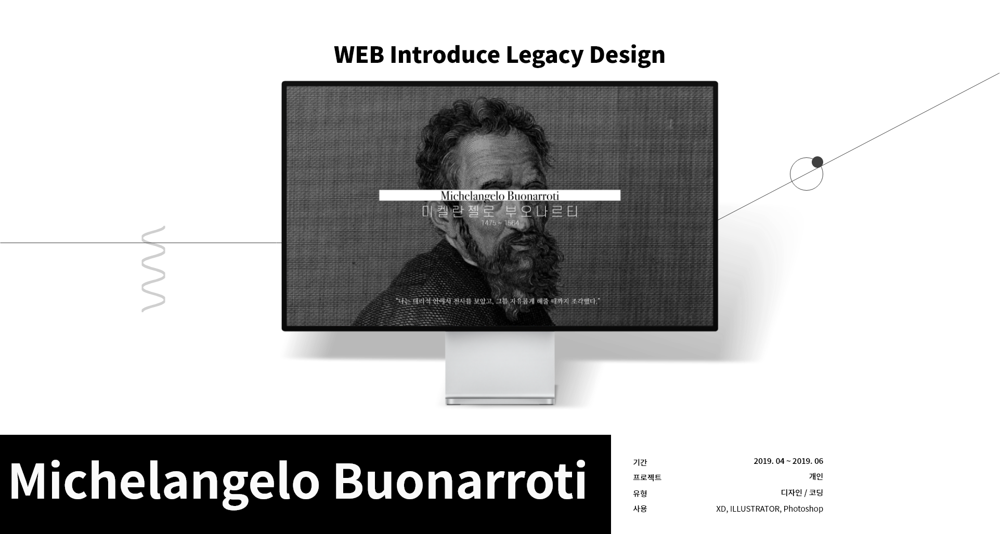
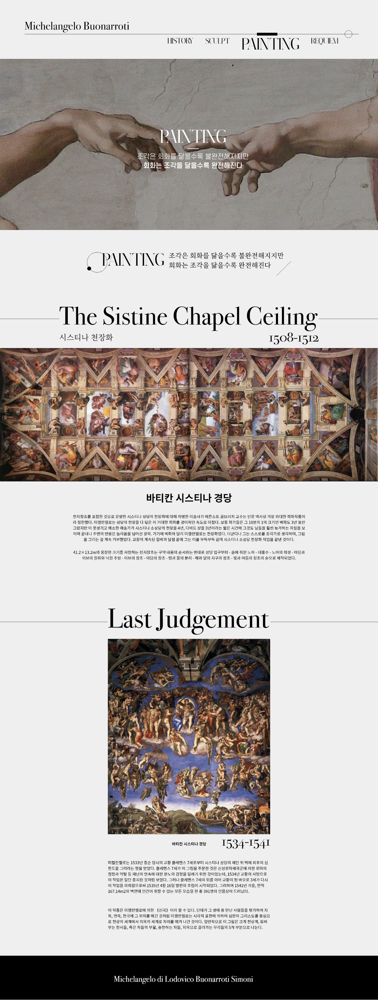
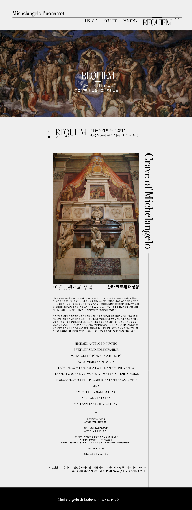
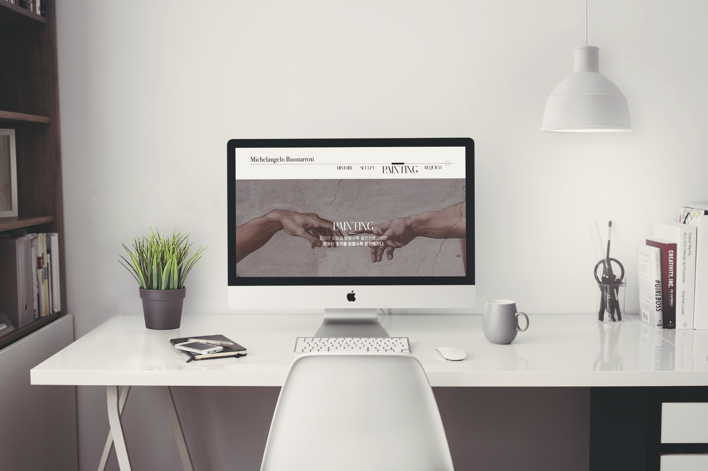

01
First Utopia
UI/UX


02
Second Utopia
WEB

ABOUT
이탈리아 여행을 갔을 때 미켈란젤로의 작품을 경험하였습니다.
수 많은 그의 작품을 보며 전율을 느꼈으며, 그가 살아온 삶의 길을
조금이라도 엿볼 수 있었습니다. 또한 디자인에 대한 제 생각에 큰 영향을 미쳤습니다.
이러한 경험을 토대로 그를 소개하는 웹디자인을 진행하였습니
MAIN_DISPLAY
미켈란젤로의 역사, 조각, 그림, 죽음 으로 4가지의 큰 틀을 기반으로 목차를 나누어 디자인 하였습니다.
해당 목차마다 그의 명언들을 인용하여 보다 친숙하게 느껴지도록 하였습니다.

HISTORY_DISPLAY
미켈란젤로가 살아온 날을 보다 읽기 편하게 표현하였습니다. 그의 말을 인용하여 깊은 인상을 주도록 디자인하였습니다.

SCULPT_DISPLAY
미칼란젤로가 조각의 배치에 대해 많은 고민을 하였습니다. 좌 중 우 배치로 인해 대리석과 같은 안정감있는 레이아웃을 진행하였습니다.

PAINTING_DISPLAY
압도적인 사이즈를 자랑하는 미켈란젤로 그림의 스케일 표현을 고민 하던 중 시스타나 천장화에서 가득채우는 방식을 따라 작품의 위압감을 더하였습니다.

REQUIEM_DISPLAY
그의 죽음마저 남달랐습니다. 산타 크로체 대성당에 있는 그의 무덤 묘비명에 새겨진 글자의 느낌을 주기 위한 디자인을 진행하였습니다.


